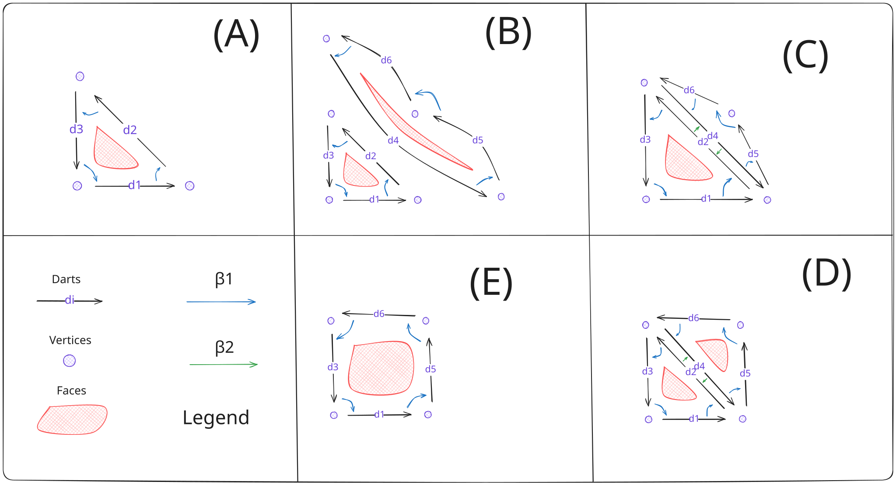
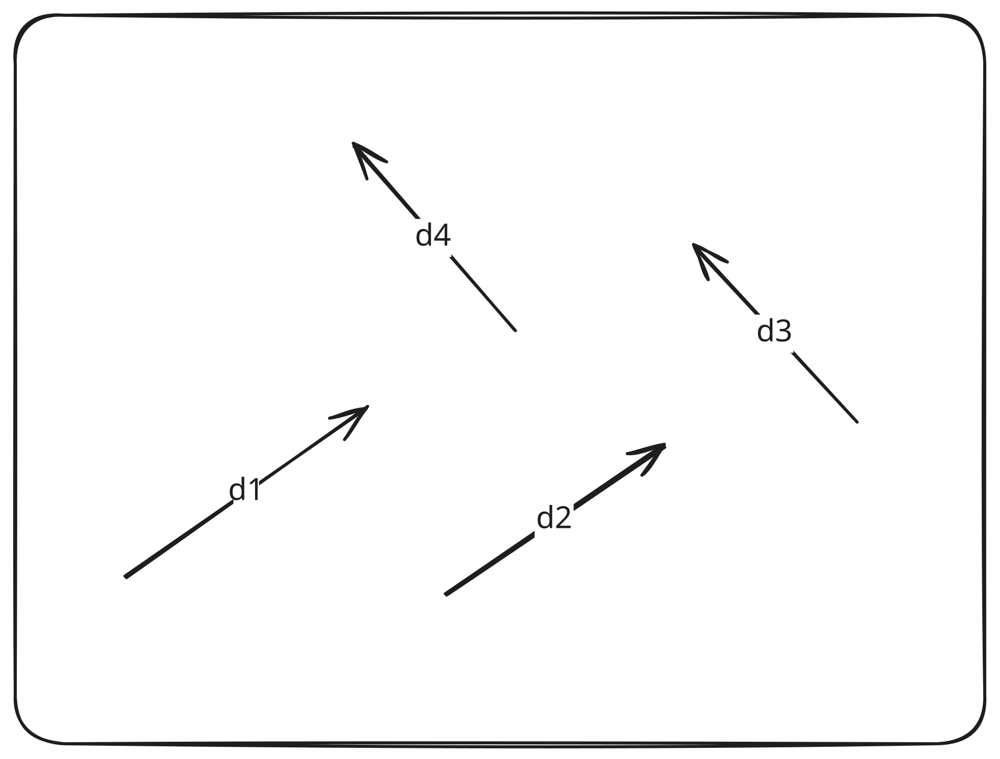
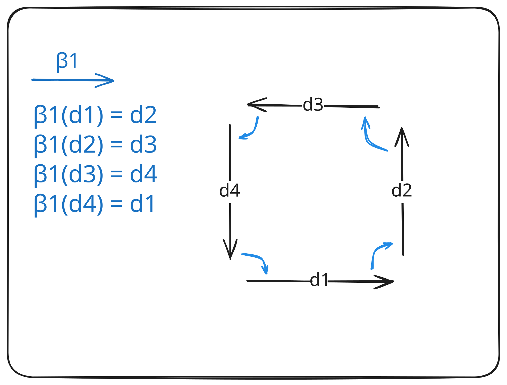
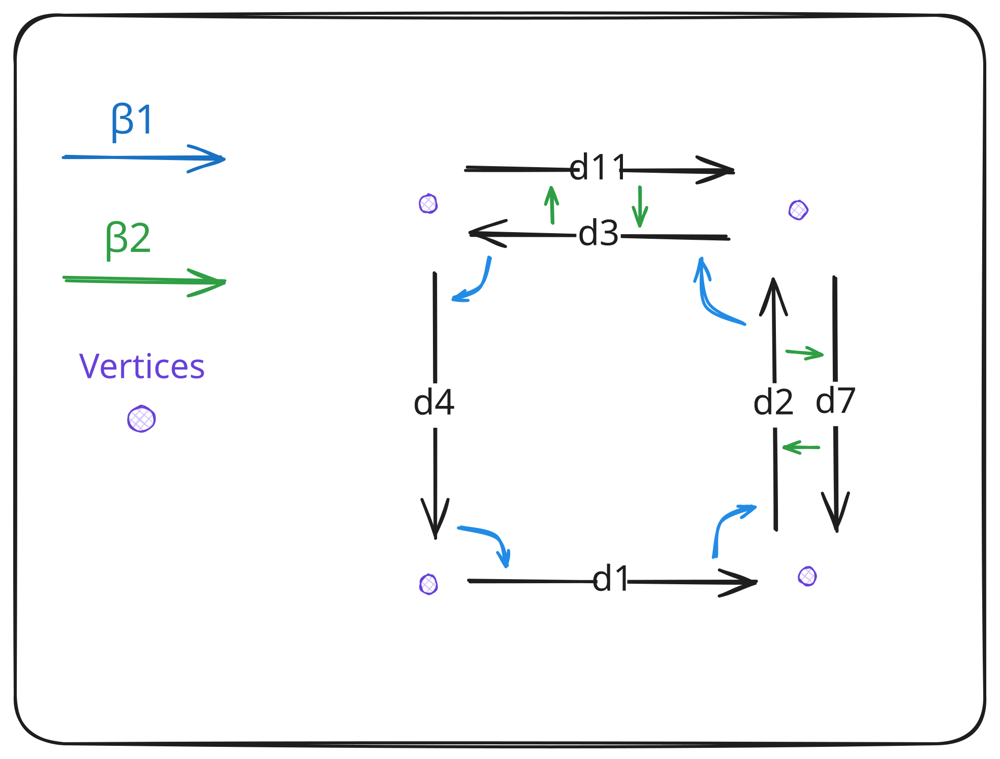
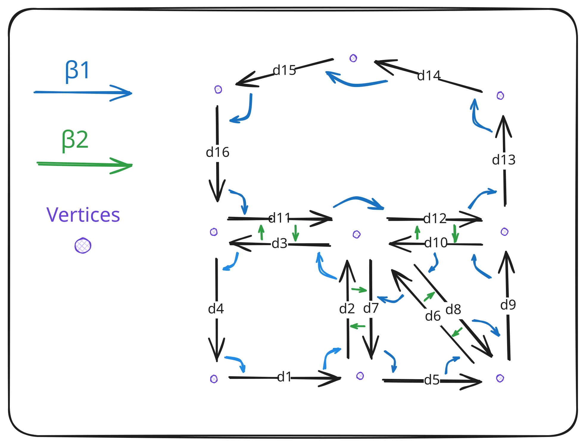
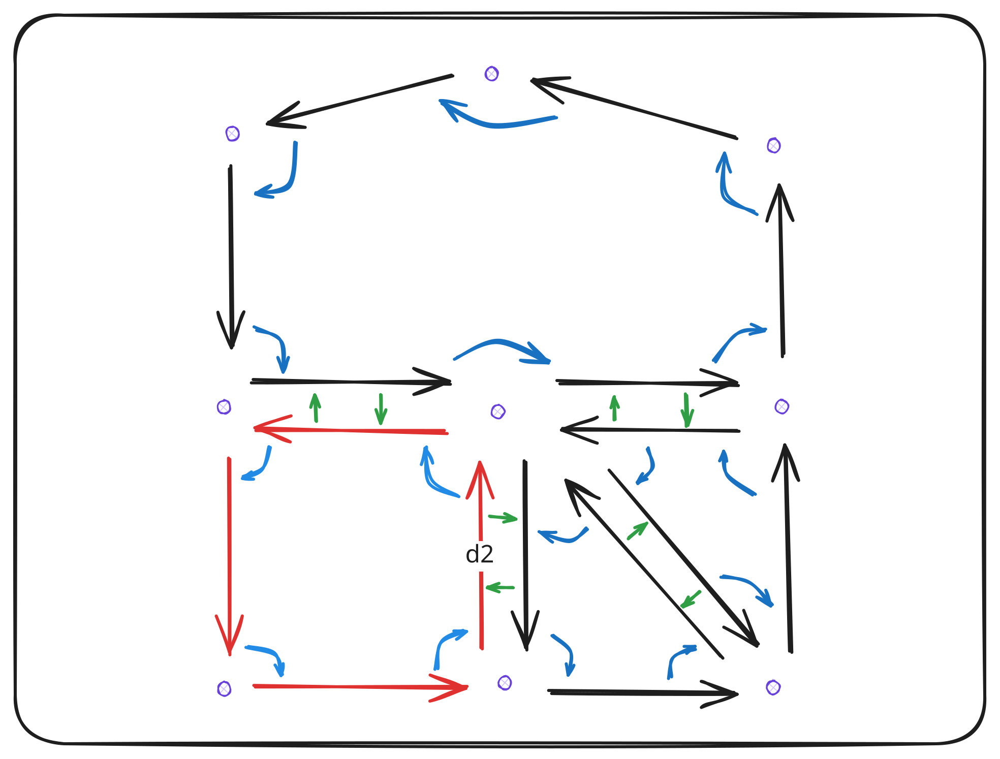
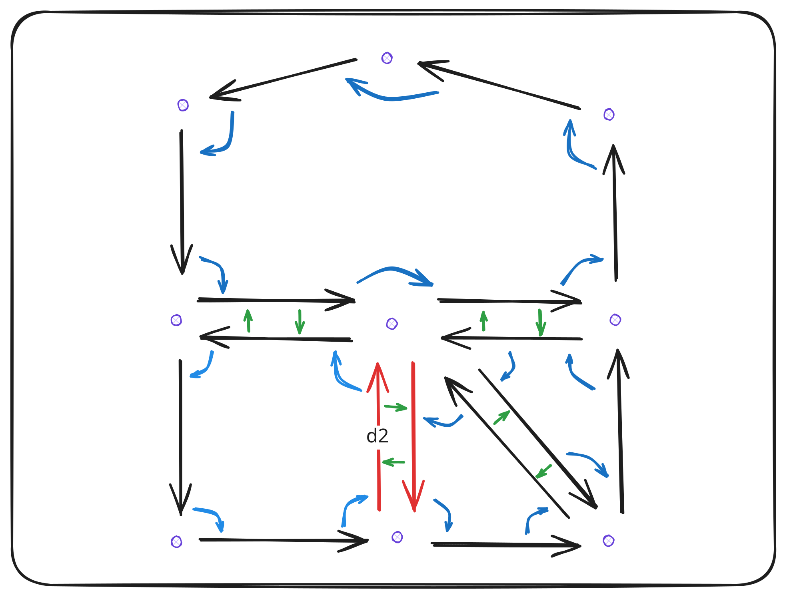
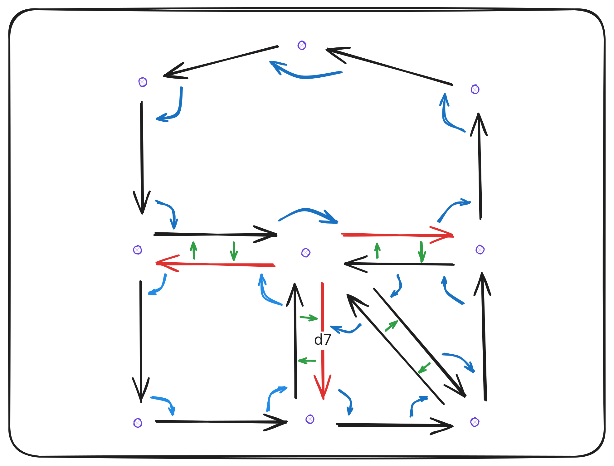
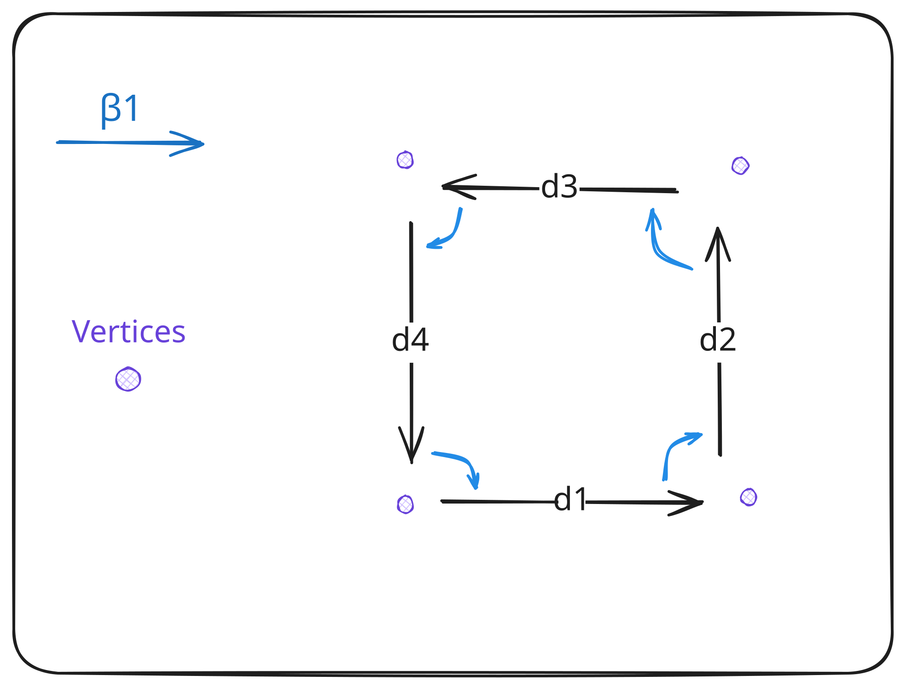

The Honeycomb User Guide


Honeycomb
Honeycomb aims to provide a safe, efficient and scalable implementation of combinatorial maps for meshing applications. More specifically, the goal is to converge towards a (or multiple) structure(s) adapted to algorithms exploiting GPUs and many-core architectures.
The current objective is to
write a first implementation in Rustimprove the structure without having to deal with data races and similar issues, thanks to the Rust's guarantees- implement basic meshing algorithms to evaluate the viability of the implementation & improve our structure using Rust's framework to streamline the refactoring and parallelization process
Core Requirements
- Rust stable release - Development started on 1.75, but we might use newer features as the project progresses
Quickstart
Rust
The core and render crates are being published on crates.io. You can add those to your project by adding the following lines to the manifest of the project:
# Cargo.toml
honeycomb-core = "0.3.0"
honeycomb-render = "0.3.0"
Note that if you want to access the latest changes and documentation, you may have to specify a commit instead of a version, and use the GitHub Pages documentation instead of the one hosted on docs.rs.
Documentation
You can generate this documentation locally using mdbook and cargo doc:
# Serve the doc on a local server
mdbook serve --open -d ../target/doc/ user-guide/ &
cargo +nightly doc --all --all-features --no-deps
Note that generating the doc using a stable toolchain is possible, the features just won't be documented as clearly.
Links
Documentation
- honeycomb-core Core definitions and tools
- honeycomb-benches Rust code benchmarks
- honeycomb-examples Rust code examples
- honeycomb-render Visualization tool
References
Contributing
Contributions are welcome and accepted as pull requests on GitHub. Feel free to use issues to report bugs, missing documentation or suggest improvements of the project.
Note that a most of the code possess documentation, including private modules / items / sections. You can generate the
complete documentation by using the instructions above and passing the option
--document-private-items to cargo doc.
License
Licensed under either of
- Apache License, Version 2.0 (LICENSE-APACHE or http://www.apache.org/licenses/LICENSE-2.0)
- MIT license (LICENSE-MIT or http://opensource.org/licenses/MIT)
at your preference.
The SPDX license identifier for this project is MIT OR Apache-2.0.
Unless you explicitly state otherwise, any contribution intentionally submitted for inclusion in the work by you, as defined in the Apache-2.0 license, shall be dual licensed as above, without any additional terms or conditions.
References
Combinatorial Maps
- Damiand, Guillaume, and Pascal Lienhardt. Combinatorial Maps: Efficient Data Structures for Computer Graphics and
Image Processing. Chapman&Hall/CRC, 2015.
- Provides an in-depth presentation of the structure and its variants
- Link
- The CGAL Project. CGAL User and Reference Manual. CGAL Editorial Board, 5.6.1 edition, 2024.
- Provides concrete examples as well as code snippets of the CGAL implementation of the structure. The CGAL implementation uses a different approach than ours, & support N-dimensionnal map.
- Link
Integration
- The repository structure and workspace system is heavily inspired by the wgpu repository
Workspace
The project root is organized using Cargo workspaces at the moment. This may change when other languages are introduced to the project.
Members
These entries are members of the Cargo workspace.
- honeycomb-core Core definitions and tools for combinatorial map implementation
- honeycomb-benches Benchmarks of the main map structures and methods
- honeycomb-examples Examples of usage of the project's features
- honeycomb-render Visualization tool for combinatorial maps
Others
These entries are additional sections that are not linked to the project through Cargo, most likely because they require a different building process.
- honeycomb-guide Source files of the user guide
honeycomb-core
honeycomb-core is a Rust crate that provides basic structures and operations for combinatorial map manipulation. This includes map structures, methods implementation, type aliases and geometric modeling for mesh representation.
Usage
A quickstart example encompassing most features is provided for the following structures:
Content
The Rust documentation fully cover the API of the crate, the main items that you might be interested in are the following:
- CMap2: 2D combinatorial map implementation
- Orbit2: Generic 2D implementation for orbit computation
- Vector2: 2D vector representation
- Vertex2: 2D vertex representation
Note that optional features can be enabled when compiling this crate:
utils-- provides additionnal implementations for map generation, benchmarking & debuggingio-- provides a function and a method for building maps from VTK meshes and vice versa
honeycomb-benches
honeycomb-benches is a Rust crate used to group benchmarking routines of the Rust code. Benchmarks are defined in this crate using the criterion and iai-callgrind crates.
Note that the iai-callgrind benchmarks require their runner to be installed as well as Valgrind. Refer to the crate's README for detailed instructions.
Usage
You can run benchmarks using the following commands:
# Run all benchmarks
cargo bench --benches
# Run a specific benchmark
cargo bench --bench <BENCHMARK>
The following benchmarks are available:
| Name | Type | Source file |
|---|---|---|
splitsquaremap-init | Criterion | benches/splitsquaremap/init.rs |
splitsquaremap-shift | Criterion | benches/splitsquaremap/shift.rs |
squaremap-init | Criterion | benches/squaremap/init.rs |
squaremap-shift | Criterion | benches/squaremap/shift.rs |
squaremap-splitquads | Criterion | benches/squaremap/split.rs |
prof-cmap2-basic | Iai-callgrind | benches/core/cmap2/basic_ops.rs |
prof-cmap2-build | Iai-callgrind | benches/core/cmap2/constructors.rs |
prof-cmap2-sewing-unsewing | Iai-callgrind | benches/core/cmap2/link_and_sew.rs |
A detailed explanation about the purpose of each benchmark is provided at the beginning of their respective source files. As a rule of thumb, the iai-callgrind benchmarks cover individual methods of the structure while criterion benchmarks cover higher level computations.
honeycomb-examples
honeycomb-examples is a Rust crate used to group examples & snippets illustrating the crates' usage.
Usage
You can run examples using the following command:
# Run a specific example
cargo run --example <EXAMPLE>
The following examples are available:
| Name | Description |
|---|---|
io_generate_vtk | Serialize the map that is rendered by the render_squaremap_split_some example. The file can be visualized using ParaView and compared to the render |
io_vtk_quad | Initialize and render a map from the legacy VTK file assets/quad.vtk |
io_vtk_tri | Initialize and render a map from the legacy VTK file assets/tri.vtk |
memory_usage | Outputs the memory usage of a given map as three csv files. These files can be used to generate charts using the memory_usage.py script |
render_default_no_aa | Render a hardcoded arrow without anti-aliasing |
render_default_smaa1x | Render a hardcoded arrow with anti-aliasing |
render_splitsquaremap | Render a map generated using functions provided by the utils module of the core crate |
render_squaremap | Render a map generated using functions provided by the utils module of the core crate |
render_squaremap_shift | Render a map computed by the squaremap-shift benchmark. Inner vertices are shifted by a random offset value. |
render_squaremap_split_diff | Render a map computed by the squaremap-splitquads benchmark. All quads are split diagonally, which diagonal chosen at random. |
render_squaremap_split_some | Render a map computed by the squaremap-splitquads benchmark. Only some quads are split diagonally, chosen at random. |
Scripts
memory_usage.py- requires matplotlib - Plots pie charts using a csv file produced by a size method of CMap2.
honeycomb-guide
honeycomb-guide is the mdbook project used to generate the documentation you are currently reading. Its content mainly focuses on definition and feature-listing rather than technical details on implementation. The latter can be found in the code documentation.
Building
You can generate this documentation locally using mdbook and cargo doc:
mdbook serve --open -d ../target/doc/ user-guide/ &
cargo doc --all --no-deps
Additional Information
Note that a most of the code possess documentation, including private modules / items / sections. You can generate
the complete documentation by using the instructions above and passing the option --document-private-items
to cargo doc.
A few observations on writing documentation using mdbook:
- If you edit the user guide's content, you will have to generate the rust doc again as mdbook remove all files of its target folder at each update.
- When linking to a folder containing an
index.htmlfile, be sure to include the last/in the name of the folder if you don't name the index file directly. Not including that last character seems to break in-file linking of the local version.
honeycomb-render
honeycomb-render is a Rust crate that provides a simple visualization framework to allow the user to render their combinatorial map. It is designed to be used directly in the code by reading data through a reference to the map (as opposed to a binary that would read serialized data).
Usage
Quickstart
Because this crate is meant to be used in tandem with other members of the workspace, no quickstart example is provided in the documentation. Instead, standalone examples provided in the project cover basic usage and parameterization.
Examples
Examples are provided in the dedicated crate, under the examples/render/ directory.
Introduction
Scope
Because our implementation has very practical goals, the definitions presented here use a more intuitive approach rather than strict mathematical concepts.
Our main interest at the moment being 2D and 3D combinatorial maps, some operations are defined with consideration to these restrictions. This is especially useful for orbits and sewing operations.
Combinatorial Maps
N-dimensional combinatorial maps, noted N-map, are objects made up of two main elements:
- A set of darts, darts being the smallest elements making up the map
- N beta functions, linking the darts of the map
Additionally, we can define embedded data as spatial anchoring of the darts making up the map. While the first two elements hold topological information, embedded data gives information about the "shape" of the map (e.g. vertices position in a spatial domain).
With these elements, we can represent and operate on meshes.
Example
Operations on a combinatorial map can affect its topology, shape or both:

The specifics on how data is encoded is detailed in attribute-specific sections.
Darts
Darts are the finest grain composing combinatorial maps. The structure of the map is given by the relationship between darts, defined through beta functions. Additionally, a null dart is defined, we denote it ∅.

In our implementation, darts exist implicitly through indexing and their associated data. There are no dart objects in a strict sense, there is only a given number of dart, their associated data ordered by an array-like logic, and a record of "unused" slots that can be used for dart insertion. Because of this, we assimilate dart and dart index.
Beta Functions
Each combinatorial map of dimension N defines N beta functions linking the set of darts together (e.g. a 2-map contains β1 and β2). These functions model the topology of the map, giving information about connections of the different cells of the map / mesh. In our case, we mostly use:
- β1, a (partial) permutation,
- β2, β3, two (partial) involutions
Additionally, we define β0 as the inverse of β1, i.e. β0(β1(d)) = d. This comes from a practical consideration for performances and efficiency of the implementation.
The βi functions can be interpreted as navigation functions along the i-th dimensions: β1 makes you navigate along the edges, β2 along the faces, etc. This can be generalized to N dimensions, but we are only interested in 2D and 3D at the moment.
Properties
For a given dart d, we define two properties:
- d is i-free if βi(d) = ∅, ∅ being the null dart
- d is free if it is i-free for all i
Construction Example



Orbits
We define orbits as a set of darts that are accessible from a given dart, using a certain set of beta functions. For example:
- ⟨β1⟩(d) refers to all darts accessible from d using β1 recursively any number of times.
- ⟨β1, β3⟩(d) refers to all darts accessible from d using any combination of β1 and β3.
i-cells
A specific subset of orbits, referred to as i-cells are defined and often used in algorithms. The general definition is the following:
- if i = 0: 0-cell(d) = ⟨{ βj o βk with 1 ≤ j < k ≤ N }⟩(d)
- else: i-cell(d) = ⟨β1, β2, ..., βi-1, βi+1, ..., βN⟩(d)
In our case, we can use specialized definitions for our dimensions:
| i | Geometry | 2-map | 3-map |
|---|---|---|---|
| 0 | Vertex | ⟨β1 o β2⟩(d) or ⟨β2 o β-1⟩(d) | ⟨β3 o β2, β1 o β3⟩(d) or ⟨β3 o β2, β3 o β-1⟩(d) |
| 1 | Edge | ⟨β2⟩(d) | ⟨β2, β3⟩(d) |
| 2 | Face | ⟨β1⟩(d) | ⟨β1, β3⟩(d) |
| 3 | Volume | - | ⟨β1, β2⟩(d) |
Examples



Embedding
Embedding, or embedded data refers to the association of topological entities (darts, i-cells) to geometrical data (spatial positions, vertices, faces, volumes).
The embedding of geometrical data has implication for operations on the map. This is detailed along operation specificities in their dedicated sections.
Implementation
Because embedding is defined per-application or per-needs, our combinatorial map implementation uses a generic system to handle this; The storage follows our own specific logic, which is detailed in this documentation entry.
Examples
Note that darts and vertex IDs are not actually stored. Formers exist implictly and latters are computed on the fly.

In the above example, data would be organized like this:
| Storages | 0 | 1 | 2 | 3 | 4 |
|---|---|---|---|---|---|
| Darts | null | d1 | d2 | d3 | d4 |
| Associated vertex ID | null | d1 | d2 | d3 | d4 |
| Vertices | null | 0.0, 0.0 | 1.0, 0.0 | 1.0, 1.0 | 0.0, 1.0 |
In the above example, data would be organized like this:
| Storages | 0 | 1 | 2 | 3 | 4 | 5 | 6 | 7 | 8 | 9 | 10 | 11 | 12 | 13 | 14 | 15 | 16 |
|---|---|---|---|---|---|---|---|---|---|---|---|---|---|---|---|---|---|
| Darts | null | d1 | d2 | d3 | d4 | d5 | d6 | d7 | d8 | d9 | d10 | d11 | d12 | d13 | d14 | d15 | d16 |
| Associated vertex ID | null | d1 | d2 | d3 | d4 | d2 | d6 | d3 | d3 | d6 | d10 | d4 | d3 | d10 | d14 | d15 | d16 |
| Vertices | null | 0.0, 0.0 | 1.0, 0.0 | 1.0, 1.0 | 0.0, 1.0 | null | 2.0, 0.0 | null | null | null | 2.0, 1.0 | null | null | null | 2.0, 2.0 | 1.0, 2.5 | 0.0, 2.0 |
Basic Operations
A number of basic operations are defined on combinatorial maps. In this section, we go over their definition, a simple example and eventual implementation specificities. Qualifies as a basic operation:
- changing the dimension of the map
- adding and removing free darts from the map
- sewing and unsewing darts
Other operations might be defined, but these are the useful core for writing higher-level abstractions over the structure.
Add / Remove a dimension
Adding or removing a dimension on a given combinatorial maps effectively corresponds, respectively, to adding or removing a beta function. In the case of decreasing the dimension, this operation can result in two disjoint dart set in the same map.
Because the current implementation only covers 2D combinatiorial maps, this operation is not implemented. When 3D maps
are implemented, it would be possible to implement this using the From trait provided by the Rust language.
Add / Remove a free dart
Adding darts
As explained in the Darts section of this guide, these entities exist implictly through indexing of the internal storage structures of the map. Because of this, adding darts translates to extending internal vectors and storages in our implementation.
An internal counter is incremented at each dart addition. This, coupled with an unused dart tracking mechanism, constitutes a way to keep track of attributed darts.
Removing darts
Removing a dart would technically require us to remove an entry inside storage structures, which are often ordered, contiguous vectors. There are two way to approach this problem:
- Actually remove the entry
- requires adjustments on all the structure to keep consistent indices
- keeps the storage compact, i.e. all allocated slots are used
- "Forget" the entry
- does not require any re-arrangements besides making sure no beta functions lands on the dart
- creates "holes" in the storage
Our implementation uses the second solution, along with a structure used to store unused slots. In turns, we can use these "holes" in the storage to reinsert darts or collapse the structure at a later point during execution.
Sewing and unsewing operation
Sewing
The sew operation can be divided into two parts:
- a topological update, which corresponds to linking the darts
- a geometrical update, which corresponds to an update of the affected embedded data, called attributes in our code
Note that the implementation is not as simple as doing one and then the other for consistency reasons: changing the topology affects our ability to retrieve the embedded data, therefore the result is highly sensitive to operation order.
Topology
The i-link operation corresponds to the aforementionned topological update. Given two darts da and db, and a given beta function βi, a link operation corresponds to the update of the βi function in order to have βi(da) = db and/or βi(db) = da depending on darts order and i. For example:
- 1-link(da,db) results in:
- β1(da) = db
- if β0 is defined, β0(db) = da
- 1-link(db,da) results in:
- β1(db) = da
- if β0 is defined, β0(da) = db
- 2-link(da,db) results in:
- β2(da) = db
- β2(db) = da
- 2-link(db,da) results in the same changes as 2-link(da,db)
Exact properties of the link operation directly depends on the property of the modified beta function.
Geometry
The i-sew operation corresponds to an i-link operation, coupled with an update of the affected attributes. How the attributes are updated is defined through trait implementation in the Rust crate (see AttributeUpdate, AttributeBind). Which attributes are updated can be deduced from the dimension i of the sewing operation. This is summarized in the following table:
| Dimension | Geometrical operation | 0-cell / Vertex Attributes | 1-cell / Edge Attributes | 2-cell / Face Attributes | 3-cell / Volume Attributes |
|---|---|---|---|---|---|
| 1 | Fusing vertices | affected | unaffected | unaffected | unaffected |
| 2 | Fusing edges | affected | affected | unaffected | unaffected |
| 3 | Fusing faces | affected | affected | affected | unaffected |
Unsewing
The unsew operation is the complementary to the sew operation. It behaves according to similar properties, but is used to remove links between darts. It does so by replacing values of the beta functions by the null dart. Geometrical updates are handled and defined in the same way as for the sew operation.